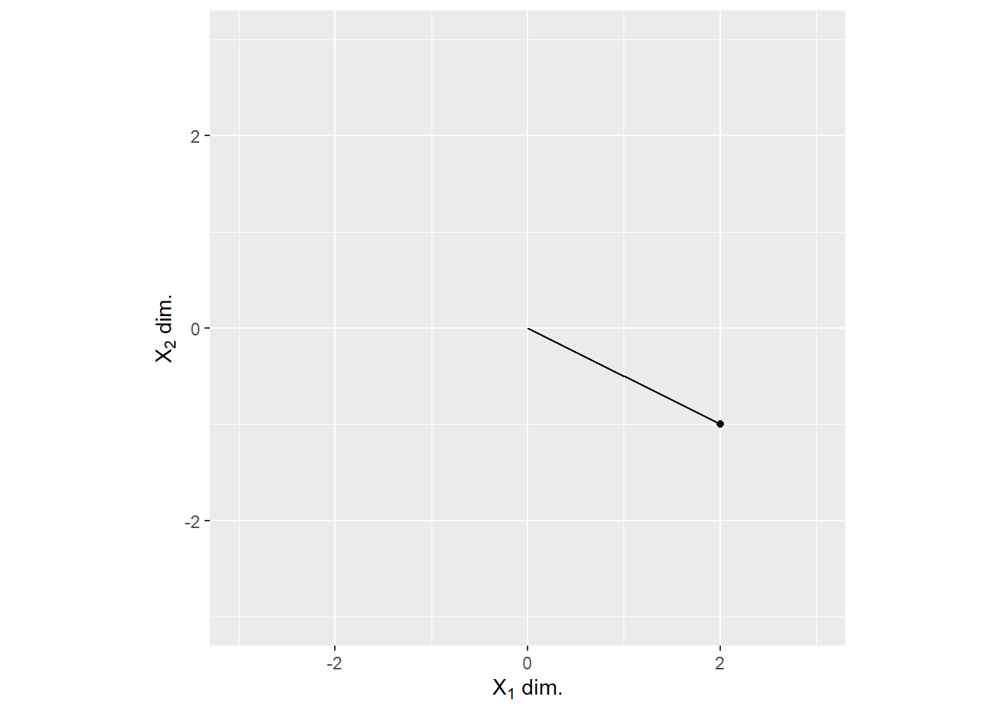

Code
Chapter 2
Code block 2.3/2.4
This is a ggplot2 rather than base R version. But ggplot2 figures do look so much better.
## Warning: package 'ggplot2' was built under R version 4.0.4v <- c(2, -1)
ggplot(data=NULL, aes(x = c(0, v[1]), y=c(0, v[2]))) +
geom_line() +
geom_point(aes(x=v[1], y=v[2])) +
scale_x_continuous(name=expression(paste(X[1], " dim.")), limits = c(-3, 3)) +
scale_y_continuous(name=expression(paste(X[2], " dim.")), limits = c(-3, 3)) +
coord_equal()
Code block 2.5/2.6
In R atomic vectors are created via c() function but, technically, they are neither column, nor row vectors. Matrix multiplication manual states that it “multiplies two matrices, if they are conformable. If one argument is a vector, it will be promoted to either a row or column matrix to make the two arguments conformable. If both are vectors of the same length, it will return the inner product (as a matrix).” At the same time, transposing an atomic vector t(c(...)) transforms it into a single row matrix, thus a row vector, hinting that deep down an outcome of c() is a column vector.
To avoid ambiguity, I will use single row and single column matrices for, respectively, row and column vectors.
Code block 2.7/2.8
Chapter 3
Code block 3.1/3.2
There is no explicit dot product function in base R but there are multiple implementations in various libraries such as pracma used here.
However, a matrix multiplication of atomic vectors (we can convert a matrix back to an atomic vector via c() or as.vector()) gives us the dot product (well, the inner product, which is why the result is a 1-by-1 matrix).
Code block 3.3/3.4
l1 <- 1
l2 <- 2
l3 <- -3
v1 <- matrix(c(4, 5, 1), ncol=1)
v2 <- matrix(c(-4, 0, -4), ncol=1)
v3 <- matrix(c(1, 3, 2), ncol=1)
l1 * v1 + l2 * v2 + l3 * v3## [,1]
## [1,] -7
## [2,] -4
## [3,] -13Code block 3.5/3.6
To compute the outer product, we must use atomic vectors, thus I’ve skipped the whole creating-column-vector-as-a-matrix thing.
v1 <- c(2, 5, 4, 7)
v2 <- c(4, 1, 0, 2)
op <- outer(v1, v2)
op <- v1 %o% v2 # alternative call as operationAlternatively, if we do start with vectors as single column matrices…
Code block 3.7/3.8
Chapter 5
Code block 5.1/5.2
There is only one way to transpose a matrix in R: via function t().
Code block 5.3/5.4
Code block 5.5/5.6
Code block 5.9/5.10
There are two ways to compute lower and upper triangular parts of a matrix. First, to use tril() and triu() function from pracma library.
Alternatively, you can use base R functions lower.tri() and upper.tri() that give you a matrix of the same size with logical values indicating whether an element belongs to, respectively, lower or upper triangle. Note that by default, the diagonal is not included!
Code block 5.11/5.12
Note that there is a toeplitz() function in stats (base R) and Topelitz() (note the first capital letter) in pracma library. Here, I use base R version.
## Warning in pracma::hankel(t, b = c(t[-1], t[1])): a[n] not equal to b[1], b[1]
## set to a[n].Code block 5.13/5.14
Chapter 6
Code block 6.1/6.2
Code block 6.3/6.4
Code block 6.5/6.6
Code block 6.7/6.8
Note that by default, matrix is constructed by column. To match the code, we need to use byrow=TRUE option.
## [1] 1 4 2 5 3 6Code block 6.9/6.10
Chapter 7
Code block 7.1/7.2
You can use Rank() from the pracma library. Alternatively, you can use rankMatrix() function from the Matrix library, which in addition to the rank itself, returns information on the method used to estimate the rank via attributes.
Code block 7.3/7.4
s <- runif(n=1)
A <- matrix(runif(n=3*5), nrow=3, ncol=5)
r1 <- pracma::Rank(A)
r2 <- pracma::Rank(s * A)
print(c(r1, r2))## [1] 3 3Code block 7.5/7.6
Source code for Rank() function from pracma library.
## function (M)
## {
## if (length(M) == 0)
## return(0)
## if (!is.numeric(M))
## stop("Argument 'M' must be a numeric matrix.")
## if (is.vector(M))
## M <- matrix(c(M), nrow = length(M), ncol = 1)
## r1 <- qr(M)$rank
## sigma <- svd(M)$d
## tol <- max(dim(M)) * max(sigma) * .Machine$double.eps
## r2 <- sum(sigma > tol)
## if (r1 != r2)
## warning("Rank calculation may be problematic.")
## return(r2)
## }
## <bytecode: 0x0000000015c3e448>
## <environment: namespace:pracma>Source code for rankMatrix() function from Matrix library.
## function (x, tol = NULL, method = c("tolNorm2", "qr.R", "qrLINPACK",
## "qr", "useGrad", "maybeGrad"), sval = svd(x, 0, 0)$d, warn.t = TRUE)
## {
## stopifnot(length(d <- dim(x)) == 2)
## p <- min(d)
## method <- match.arg(method)
## if (useGrad <- (method %in% c("useGrad", "maybeGrad"))) {
## stopifnot(length(sval) == p, diff(sval) <= 0)
## if (sval[1] == 0) {
## useGrad <- FALSE
## method <- eval(formals()[["method"]])[[1]]
## }
## else {
## ln.av <- log(abs(sval))
## diff1 <- diff(ln.av)
## if (method == "maybeGrad") {
## grad <- (min(ln.av) - max(ln.av))/p
## useGrad <- !is.na(grad) && min(diff1) <= min(-3,
## 10 * grad)
## }
## }
## }
## if (!useGrad) {
## x.dense <- is.numeric(x) || is(x, "denseMatrix")
## if ((Meth <- method) == "qr")
## method <- if (x.dense)
## "qrLINPACK"
## else "qr.R"
## else Meth <- substr(method, 1, 2)
## if (Meth == "qr") {
## if (is.null(tol))
## tol <- max(d) * .Machine$double.eps
## }
## else {
## if (is.null(tol)) {
## if (!x.dense && missing(sval) && prod(d) >= 100000L)
## warning(gettextf("rankMatrix(<large sparse Matrix>, method = '%s') coerces to dense matrix.\n Probably should rather use method = 'qr' !?",
## method), immediate. = TRUE, domain = NA)
## stopifnot(diff(sval) <= 0)
## tol <- max(d) * .Machine$double.eps
## }
## else stopifnot((tol <- as.numeric(tol)[[1]]) >= 0)
## }
## }
## structure(if (useGrad)
## which.min(diff1)
## else if (Meth == "qr") {
## if ((do.t <- (d[1L] < d[2L])) && warn.t)
## warning(gettextf("rankMatrix(x, method='qr'): computing t(x) as nrow(x) < ncol(x)"))
## q.r <- qr(if (do.t)
## t(x)
## else x, tol = tol, LAPACK = method != "qrLINPACK")
## if (x.dense && (method == "qrLINPACK"))
## q.r$rank
## else {
## diagR <- if (x.dense)
## diag(q.r$qr)
## else diag(q.r@R)
## d.i <- abs(diagR)
## if ((mdi <- max(d.i)) > 0)
## sum(d.i >= tol * mdi)
## else 0L
## }
## }
## else if (sval[1] > 0)
## sum(sval >= tol * sval[1])
## else 0L, method = method, useGrad = useGrad, tol = if (useGrad)
## NA
## else tol)
## }
## <bytecode: 0x00000000204f0388>
## <environment: namespace:Matrix>Chapter 8
Chapter 9
Code block 9.1/9.2
Code block 9.3/9.4
Base R does not have a function that generates random integers on the interval. I will use sample() with replacement from the range of integers to replicate this. Also note that I have renamed i to im to minimize the confusion.
r <- sample(-3:4, size=3, replace = TRUE)
im <- sample(-3:4, size=3, replace = TRUE)
Z <- r + im * 1i
print(Z)## [1] -3-3i 1+4i 3+3i## [1] -3+3i 1-4i 3-3iChapter 10
Code block 10.1/10.2
You can use pracma::lu() function but note that it works only on square, positive definite matrices.
# Using the square matrix from practice problem b
A <- matrix(c(2, 0, 1, 1, 1, 2, 3, 1, 3), nrow=3, byrow=TRUE)
pracma::lu(A)## $L
## [,1] [,2] [,3]
## [1,] 1.0 0 0
## [2,] 0.5 1 0
## [3,] 1.5 1 1
##
## $U
## [,1] [,2] [,3]
## [1,] 2 0 1.0
## [2,] 0 1 1.5
## [3,] 0 0 0.0Chapter 12
Code block 12.1/12.2
In R, you find the inverse via solve(). The latter solves an equation \(Ax = b\), omitting the second argument defaults b = I and the equation is solved to find the inverse. I have added round() to make it easier to see that \(A A^-1\) produces an identity matrix.
## [,1] [,2] [,3]
## [1,] 1 0 0
## [2,] 0 1 0
## [3,] 0 0 1Code block 12.3/12.4
A <- matrix(rnorm(n=3*3), nrow=3, ncol=3)
Acat <- cbind(A, diag(1, nrow=3, ncol=3))
Ar <- pracma::rref(Acat) # RREF
Ar <- Ar[, 4:6] # keep inverse
Ai <- solve(A)
round(Ar - Ai, 4)## [,1] [,2] [,3]
## [1,] 0 0 0
## [2,] 0 0 0
## [3,] 0 0 0Code block 12.5/12.6
## [,1] [,2] [,3]
## [1,] 1 0 0
## [2,] 0 1 0
## [3,] 0 0 1Chapter 13
Chapter 15
Code block 15.1/15.2
Chapter 16
Code block 16.1/16.2
Note that by default number of left (matrix U) and right (matrix V) singular vectors is determined as, respectively, nu = min(n, p) and nv = min(n, p) for the n × p matrix. Therefore, I included nv=ncol(A) to replicate output by Python. Also note that R, like Matlab, return V. Also note that singular values attribute is d and it is a vector not a diagonal matrix.